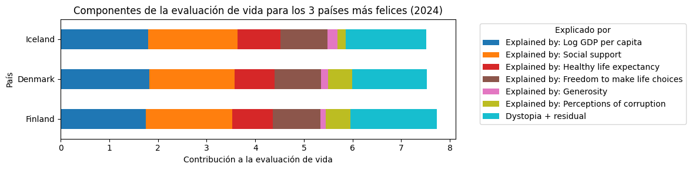
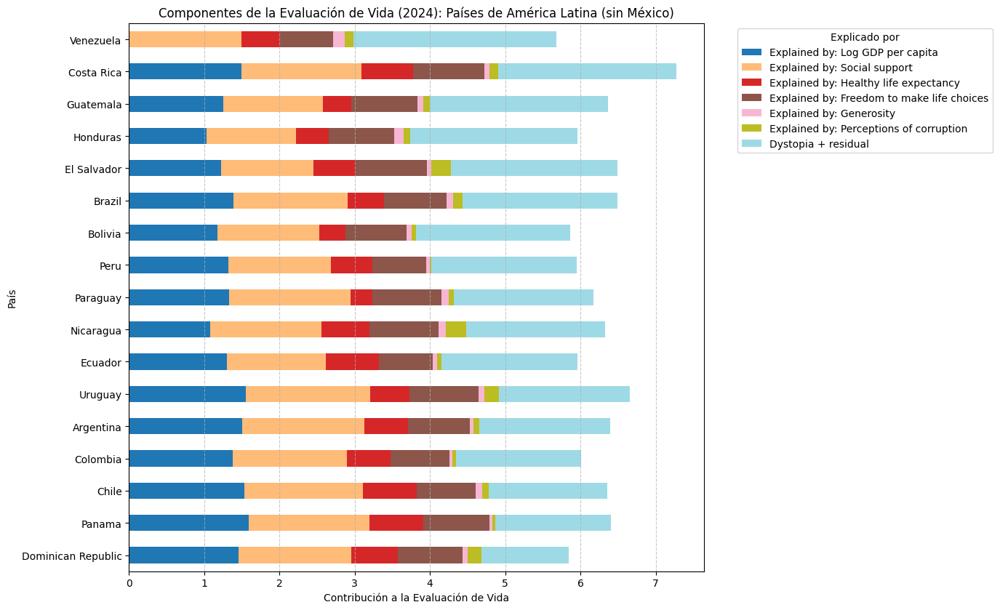
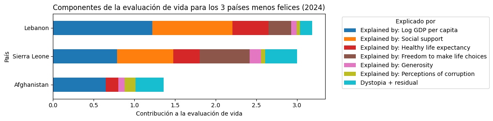

Colombia en el Índice Mundial de Felicidad
World Happiness Report 2025
📊 ¿Qué significa esta puntuación?
El Índice de Felicidad es una medida de bienestar basada en encuestas donde las personas evalúan su vida en una escala del 0 al 10. Colombia obtiene una puntuación de 6.004, ubicándose en el puesto 61 a nivel mundial.
Esta puntuación coloca a Colombia en un nivel medio-alto de bienestar, por encima del promedio latinoamericano, pero con margen de mejora en varias áreas clave.
🌟 Los 3 Países Más Felices del Mundo
¿Cómo se compara Colombia con los líderes mundiales en felicidad?

Fortalezas: Alto PIB per cápita, excelente sistema educativo y de salud, baja corrupción, fuerte apoyo social

Fortalezas: Balance trabajo-vida, igualdad social, confianza en instituciones, alta libertad personal

Fortalezas: Baja desigualdad, fuerte cohesión social, excelente calidad de vida, medio ambiente limpio
📊 Gráfica Comparativa - Países Más Felices

Comparación visual de Colombia con los países más felices del mundo
🌎 Colombia vs Otros Países de Latinoamérica
Colombia se encuentra en una posición competitiva dentro de la región latinoamericana


📊 Gráfica Comparativa - Latinoamérica

Posición de Colombia en el ranking latinoamericano de felicidad
⚠️ Los 3 Países Menos Felices del Mundo
Colombia está significativamente mejor que los países con mayores desafíos en bienestar

Causas: Crisis económica severa, inestabilidad política, colapso de servicios básicos

Causas: Pobreza extrema, alta tasa de VIH/SIDA, desempleo masivo, inseguridad alimentaria

Causas: Conflicto armado continuo, crisis humanitaria, falta de libertades básicas, pobreza extrema
📊 Gráfica Comparativa - Países Menos Felices

Diferencia de Colombia con los países con menor índice de felicidad
⭐ Factores que Explican la Felicidad en Colombia

Causas:
- Economía diversificada (petróleo, café, turismo)
- Crecimiento económico moderado pero estable
- Desigualdad en la distribución del ingreso
- Mercado laboral con alta informalidad (≈60%)

Causas:
- Cultura familiar fuerte y redes de apoyo
- Comunidades unidas y solidarias
- Tradición de ayuda entre vecinos
- Resiliencia ante adversidades históricas

Causas:
- Sistema de salud universal pero con desigualdades
- Mejoras en atención primaria
- Desafíos en zonas rurales y remotas
- Enfermedades crónicas en aumento

Causas:
- Democracia consolidada
- Libertades civiles establecidas
- Sociedad pluralista y diversa
- Aunque persisten desafíos en seguridad

Causas:
- Limitaciones económicas familiares
- Cultura de ayuda directa vs. donaciones formales
- Desconfianza en organizaciones benéficas
- Solidaridad informal más común

Causas:
- Escándalos públicos recurrentes
- Desconfianza histórica en instituciones
- Percepción de impunidad
- Aunque hay esfuerzos de transparencia
🌟 La Esencia de Colombia
Colombia es un país de contrastes y belleza natural incomparable. Desde las playas del Caribe hasta los paisajes montañosos de los Andes, pasando por la biodiversidad del Amazonas, cada rincón del país ofrece una experiencia única.
La calidez de su gente, la riqueza cultural, y la resiliencia histórica hacen de Colombia un país especial en el corazón de América Latina.
🎯 Conclusiones para Colombia
Fortalezas principales:
- 💪 Apoyo social robusto: Los colombianos cuentan con redes familiares y comunitarias fuertes
- 🗽 Alta libertad personal: Satisfacción con autonomía y derechos individuales
- 😊 Optimismo cultural: A pesar de desafíos, mantienen actitud positiva
- 🌎 Liderazgo regional: Cuarto país más feliz de Latinoamérica
Áreas de mejora:
- 📉 Generosidad formal baja: Necesidad de fortalecer cultura de donación organizada
- 🏛️ Percepción de corrupción: Requiere mayor transparencia institucional
- 💼 Desarrollo económico: Reducir informalidad y desigualdad
- 🏥 Acceso equitativo a salud: Mejorar cobertura en zonas rurales